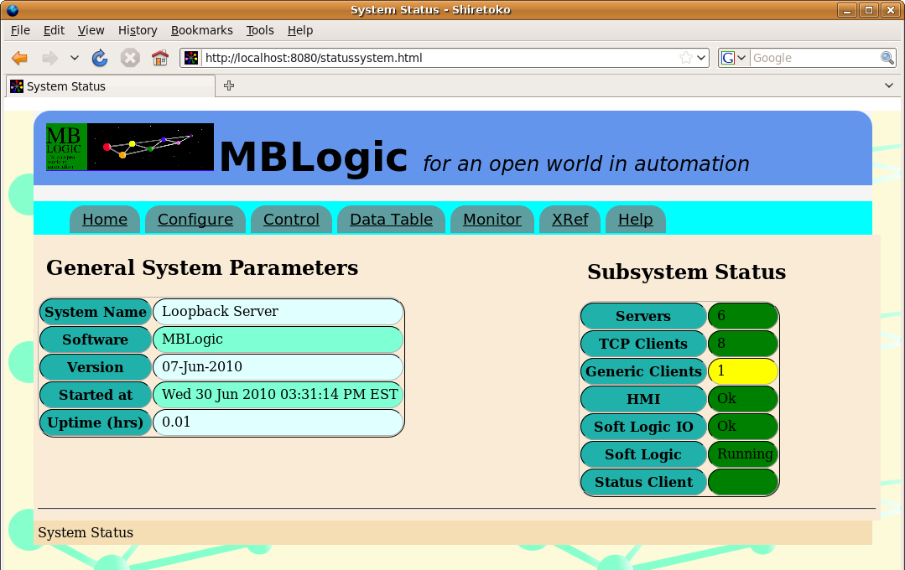
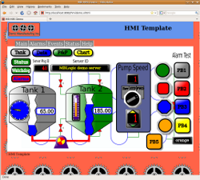

MBLogic
for an open world in automation
MBLogic
for an open world in automation
Help - Installation - Testing the Application
Overview:
This section describes how to test the application after you have installed it.
Checking the Web Interface:
Check the system status web page by starting your web browser and entering the following URL (this assumes you are using the sample configuration in mbserver.config):
http://localhost:8080/statussystem.html
You should see a web page titled "System Status" similar to the one shown below.

Near the right side of the page should be a section titled "Subsystem Status". There should be a table with headings "Servers", "Clients", "Soft Logic", "Soft Logic IO", and "HMI". Each will be accompanied by a text status message and a coloured background status indication.
The monitoring system uses Javascript to fetch fresh data from the server on a regular basis. The page updates itself on a live basis and Javascript must be enabled to view any data.
System Help:
If you can view the status system web page (see above), you will now be able to access the system on-line help. Click on the "Help" link in the menu near the top of the stats web page.
Checking the User Help Server:
Check the user help system by starting your web browser and entering the following URL (this assumes you are using the sample configuration in mbserver.config):
http://localhost:8081/index.html
You should see a web page titled "User Help". The default page is a place holder which can be replaced with other content.
Running the HMI Demo:
Check the HMI system by starting your web browser and entering the following URL (this assumes you are using the sample configuration in mbserver.config):
http://localhost:8082/hmidemo.xhtml
Alternatively, the available HMI screens are listed at the bottom of the "configure" page. Click on the web page name to open it.

You should see a web page titled "MB-HMI Demo". You should see a number of graphical elements including push buttons, pilot lights, tanks, and gauges.

Just above the middle of the screen on the left you should see a numeric display box titled "Server Mesg ID:" the number appearing within the box should be incrementing at a rate of approximately once per second. To the left of this should be a box titled "Comm Status". The background of this box should be green. If you see these items, the system is running correctly.
The HMI demo uses vector graphics based on SVG. Most modern web browsers have this capability, including Firefox, Opera, Apple Safari, Google Chrome, etc. Some browsers based on older technology (e.g. any version of MS Internet Explorer, old versions of Netscape Navigator, etc.) do not have this ability. They may load but not display the page.
The demo page was developed and tested using Firefox, so that browser is recommended for this test. Be sure that you have Javascript enabled, as it is needed to run the communications between the web page and the server.